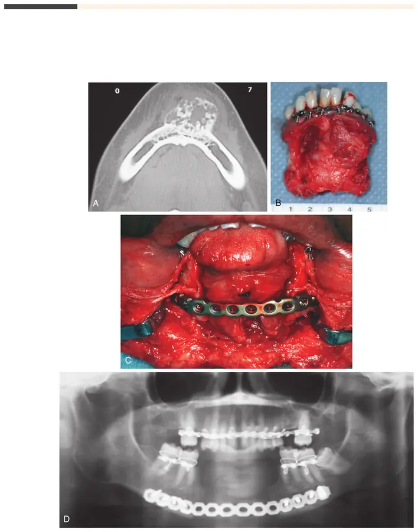
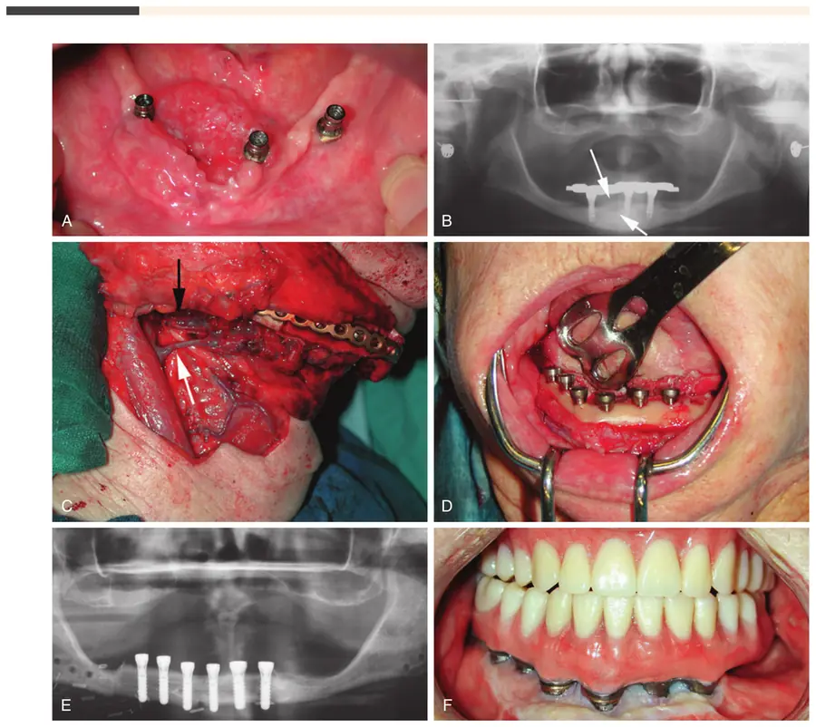

نسخه استخراجشده؛ ترجمه یا تأیید علمی انجام نشده است. وضعیت: captured
نخست یک تعریف: بافتی که پیوند زده میشود و انتظار میرود بخشی از میزبانی شود که به آن پیوند شده، «گرافت» نامیده میگردد.

و یک ویژگی که استخوان را میان بافتهای همبند منحصربهفرد میکند: ترمیم استخوان و پیوندهای استخوانی منحصربهفرد است، چون تشکیل استخوان تازه از بازسازی بافتی برمیخیزد نه از ترمیم ساده با تشکیل اسکار.
و بنابراین این ترمیم به دو عنصر نیاز دارد: عنصر تکثیر سلولی (یعنی استئوبلاستها) و عنصر ساخت کلاژن.
و حالا نظریهی دو فازی استخوانسازی — دو فرایند پایه:
فاز یک: نخستین فرایندی که به بازسازی استخوان میانجامد، در آغاز از سلولهای پیوندشده در خودِ گرافت برمیخیزد که تکثیر میشوند و استئوئید تازه میسازند.
و یک رابطهی مستقیم: مقدار بازسازی استخوان در این فاز، به شمار سلولهای پیوندشده بستگی دارد — یعنی هرچه شمار سلولهای زندهی پیوندشده بیشتر، بافت استخوانی تولیدشده بیشتر.
فاز دو — که از هفتهی دوم آغاز میشود: بستر گرافت هم تغییراتی میکند که به فاز دوم بازسازی استخوان میانجامند.
و کار دوم فاز دو: این فاز مسئول ادغام منظم گرافت در بستر میزبان با تحلیل و جایگزینی و بازسازی پیوسته هم هست.
و پاسخ ایمنی — و چرا اهمیت دارد:
و نوع پاسخ: پاسخی که سیستم ایمنی در برابر گرافتهای «خارجی» راه میاندازد، عمدتاً پاسخ سلولی با واسطهی لنفوسیتهای T است.
و یک نکتهی فریبنده: پاسخ میتواند بیدرنگ رخ ندهد، و در دورهی اولیه، ادغام گرافت استخوانی در میزبان میتواند بهنظر برسد که بهطور طبیعی پیش میرود.
و طول این دورهی نهفته به چه بستگی دارد؟ به شباهت میان دهنده و گیرنده؛ هرچه از نظر آنتیژنی شبیهتر باشند، ظاهر شدن واکنش ایمنی میتواند بیشتر طول بکشد.
و یک تفاوت عملی که باید بدانی: اعمال تعیین نوع بافت، که در آن اهداکننده و گیرنده پیش از پیوند از نظر ژنتیکی برای شباهت مقایسه میشوند، در حال حاضر برای پیوند اعضا رایجاند — ولی هرگز برای پیوند استخوان انجام نمیشوند.
۱ — پیوند اتوژن (اتوگرافت یا خودپیوند): از بافتهای همان فرد ساخته شده، و استخوان اتوژن تازه، ایدهآلترین مادهی پیوند استخوانی است.

و چرا منحصربهفرد است؟ گرافت اتوژن، میان پیوندهای استخوانی از این نظر یگانه است که تنها نوع پیوندی است که سلولهای زنده و سازگار ایمنی — ضروری برای استخوانسازی فاز یک — را فراهم میکند.
و دو شکلش:
و منابعش: شایعترین محل تهیهی این نوع، ایلیوم است؛ و فضای دیپلوئیک طاق جمجمه اخیراً برای این نوع گرافت وقتی مقادیر کمی تراشهی استخوان لازم است — مثلاً پیوند شکاف آلوئولار — به کار رفته است.
و مزایای استخوان اتوژن — دو مورد: سلولهای استخوانساز برای تشکیل استخوان فاز یک را فراهم میکند، و هیچ پاسخ ایمنی رخ نمیدهد.
۲ — پیوند آلوژنیک (آلوگرافت یا هوموگرافت): پیوندهایی که از فرد دیگری از همان گونه گرفته میشوند. و چون افراد معمولاً از نظر ژنتیکی ناهمسانند، درمان گرافت برای کاهش آنتیژنیسیته بهطور روتین انجام میگیرد؛ امروزه رایجترین استخوان آلوژنیک بهکاررفته، فریزدرای است.
و پیامد مهم این درمان: همهی این درمانها هر سلول استخوانساز باقیمانده در گرافت را نابود میکنند، پس پیوندهای استخوانی آلوژنیک نمیتوانند در استخوانسازی فاز یک شرکت کنند.
و پس نقششان چیست؟ کمک این گرافتها به استخوانسازی کاملاً منفعل است؛ آنها یک ماتریکس بافت سخت برای القای فاز دو ارائه میدهند.
و نتیجهاش: پس میزبان باید همهی عناصر ضروری را در بستر گرافت تولید کند تا گرافت آلوژنیک تحلیل و جایگزین شود — و آشکارا، سلامت بستر گرافت در این شرایط بسیار مهمتر از حالتی است که استخوان اتوژن به کار رود.
و مزایای آلوگرافت: به محل عمل دومی در میزبان نیاز ندارد، و استخوانی مشابه یا با شکلی شبیه آنچه جایگزین میشود میتواند بهدست آید — مثلاً مندیبل آلوژنیک برای بازسازی نقص مندیبولکتومی. و عیبش: سلولهای زنده برای استخوانسازی فاز یک فراهم نمیکند.
۳ — پیوند زنوژنیک (زنوگرافت یا هتروگرافت): از گونهای گرفته و به گونهی دیگری پیوند میشود.
۴ — پروتئینهای مورفوژنتیک استخوان (BMP): گروهی از اسیدهای آمینه و پلیپپتیدهای استخوانالقاکننده و متوالیآرایشیافته که توانایی تحریک سلولهای مزانشیمی درون بدن برای استئوبلاستیک شدن و ساختن استخوان را دارند.
و تاریخچهاش: BMP نخست توسط یوریست توصیف شد، که تشکیل استخوان نابجا در خرگوش و موش را از ایمپلنتهای استخوانی ناهمگون درمانشده نشان داد. و بعدها بسیاری از BMPها شناسایی و کلون شدند، که BMPهای نوترکیب را برای استفادهی قطعی در گسترهای از محلهای گیرنده، از جمله بازسازی فکها، در دسترس قرار داد.
و مزایای BMP: به محل عمل دومی در میزبان نیاز ندارد؛ و وقتی سودمندند که عمل محل اهداکننده مطلوب نباشد و استخوان آلوژنیک یا زنوژنیک در دسترس نباشد. و عیبش: سلولهای زنده برای استخوانسازی فاز یک فراهم نمیکند.
و حالا ترکیب پیوندها — یک راهحل هوشمندانه:
ترکیب اول: گرافت آلوژنیک تا جایی خالی میشود که تنها صفحات کورتیکال باقی بمانند؛ سپس مغز و استخوان اسفنجی ذرهای اتوژن بهدست آمده و درون این پوسته بستهبندی میشود تا سلولهای استخوانساز لازم برای تشکیل استخوان فاز یک را فراهم کند.
و منطقش: به این شیوه، مواد لازم برای هر دو فاز استخوانسازی فراهم میشوند، بدون آنکه برداشتن بخش بزرگی از آناتومی فرد ضروری باشد. و بخش آلوژنیک گرافت مانند یک پوستهی زیستتخریبپذیر عمل میکند که با گذشت زمان کاملاً با استخوان میزبان جایگزین میشود.
و عیبش: این عمل به محل عمل دومی در میزبان برای بهدست آوردن گرافت ذرهای اتوژن نیاز دارد.
ترکیب دوم — مهندسی بافت حقیقی: مانند روش پیشگفته از استخوان آلوژنیک بهعنوان داربست یا برای فراهم کردن حجم استفاده میکند — ولی بهجای برداشت مغز ذرهای بیمار با یک عمل جراحی، آسپیراسیون مغز استخوان برای فراهم کردن این سلولها به کار میرود.
و چرا این بهتر است؟ بسیار کمتهاجمیتر است، چون سوزنی برای آسپیره کردن سلولهای استخوانی از ستیغ ایلیاک به کار میرود و هیچ عمل جراحیای برای بهدست آوردن سلولهای استخوانشایسته لازم نیست.
و مرحلهی پایانی: آسپیرهی مغز استخوان در سانتریفیوژ تغلیظ میشود، و مایع حاوی سلولهای استخوانی با BMP مخلوط میگردد تا آنها را تحریک کند.
و قاعدهی کلی این درس: پیش از انتخاب پیوند، بدان استخوان چگونه ترمیم مییابد — کدام فاز را گرافت میدهد و کدام را باید بستر میزبان بدهد.